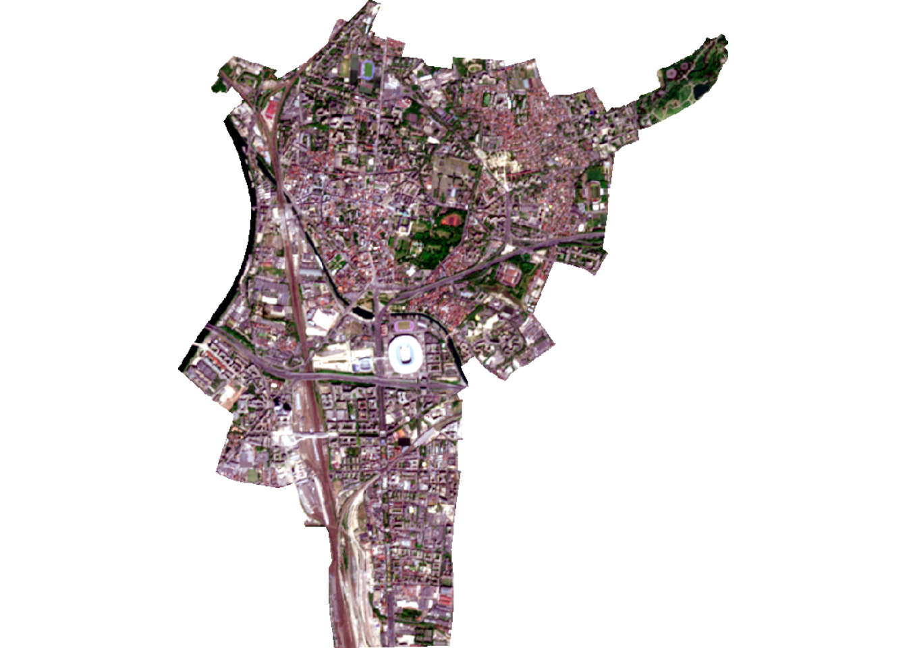
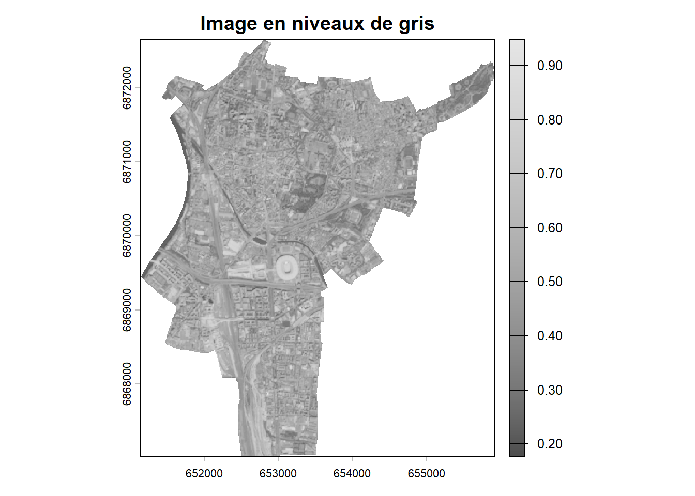
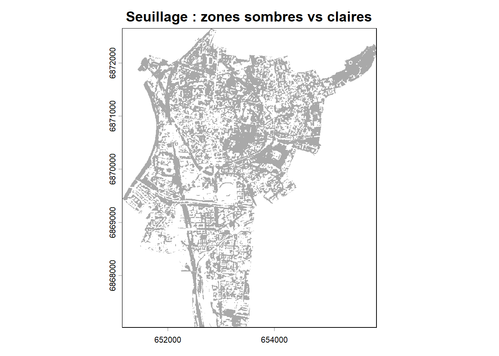
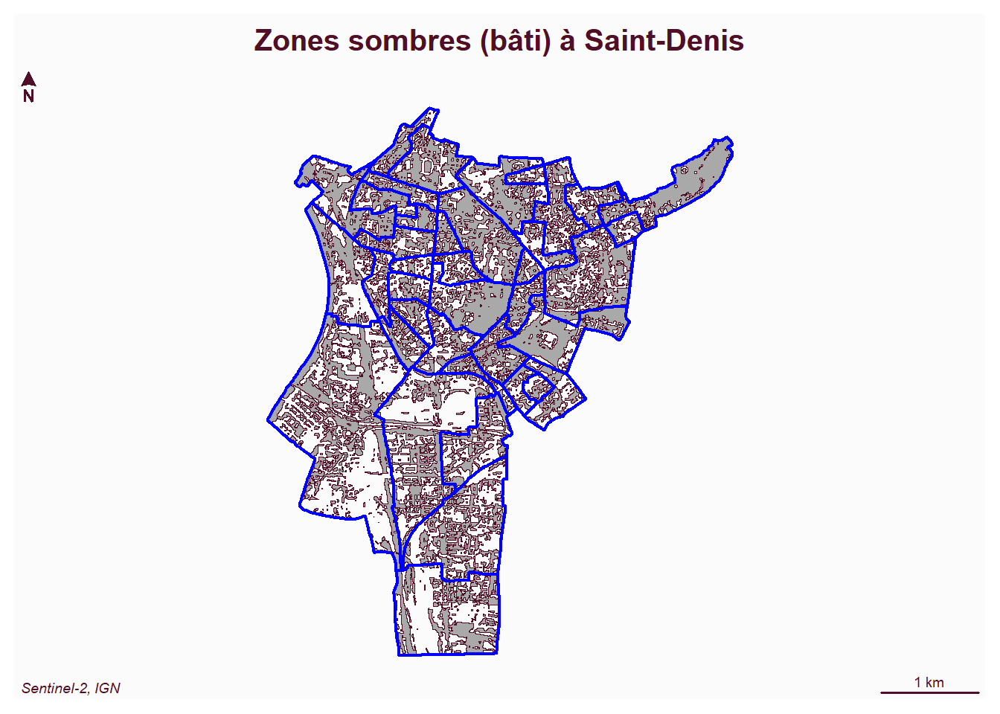
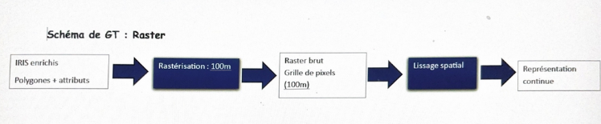

Bien que notre analyse repose principalement sur des données vectorielles, un traitement raster a été réalisé à partir d’une image satellite Sentinel-2 afin d’obtenir une représentation continue du territoire de Saint-Denis.
iris <- st_read("data/iris.shp", quiet = TRUE)
iris_sd <- iris[iris$Nom_Officie.7 == "['Saint-Denis']", ]
iris_sd <- st_transform(iris_sd, 2154)
commune_sd <- st_union(iris_sd)
r <- rast("index_files/2026-05-01-00_00_2026-05-01-23_59_Sentinel-2_L2A_True_color(2).tiff")
r_reproj <- project(r, "EPSG:2154")L’image Sentinel-2 est initialement en WGS 84. Elle est reprojetée en Lambert 93 (EPSG:2154) pour être cohérente avec les données vectorielles et travailler en mètres.
r_crop <- crop(r_reproj, vect(commune_sd))
r_mask <- mask(r_crop, vect(commune_sd))
plotRGB(r_mask, r=1, g=2, b=3, stretch="lin",
main="Saint-Denis - Image Sentinel-2")
Le raster satellite est d’abord découpé selon les limites administratives de la commune de Saint-Denis grâce aux opérations de crop puis de mask. Le crop permet de réduire l’image à l’emprise générale de la commune, tandis que le mask conserve uniquement les pixels situés à l’intérieur des limites exactes du territoire communal. L’image obtenue met en évidence un territoire fortement urbanisé et très dense. On observe une occupation du sol largement dominée par le bâti, les infrastructures et les réseaux de transpor. Cette forte densité urbaine traduit l’histoire industrielle et la forte pression foncière qui caractérisent la commune.
r_gris <- mean(r_mask)
plot(r_gris, col = gray.colors(256),
main = "Image en niveaux de gris")
Les trois bandes spectrales rouge, verte et bleue de l’image satellite sont ensuite fusionnées en calculant leur moyenne afin de produire une image simplifiée en niveaux de gris. Chaque pixel obtient ainsi une valeur unique représentant son intensité lumineuse.
Cette transformation permet de faciliter les traitements automatiques sur l’image. Les zones claires correspondent principalement à des surfaces plus réfléchissantes comme certains espaces ouverts ou végétalisés, tandis que les zones plus sombres renvoient davantage aux espaces fortement artificialisés et denses. La carte fait apparaître une forte continuité des surfaces urbaines sur l’ensemble du territoire communal, révélant l’importance du tissu bâti dans l’organisation spatiale de Saint-Denis..
r_seuil <- ifel(r_gris < 0.5, 1, 0)
plot(r_seuil,
col = c("white", "darkgray"),
main = "Seuillage : zones sombres vs claires",
legend = FALSE)
Un seuil de 0,5 est appliqué sur l’image afin de produire un raster binaire. Les pixels dont la valeur est inférieure à ce seuil sont classés comme zones sombres, tandis que les autres correspondent aux zones plus claires.
Cette opération permet de distinguer les espaces les plus denses et artificialisés des zones plus ouvertes. Les zones sombres identifiées sur la carte correspondent principalement au bâti dense, aux infrastructures urbaines et aux espaces fortement minéralisés. À l’inverse, les zones plus claires traduisent la présence d’espaces végétalisés ou moins urbanisés. Cette répartition confirme le caractère très urbanisé de Saint-Denis, avec une forte concentration d’espaces bâtis continus.
r_vect <- as.polygons(r_seuil)
r_vect_sf <- st_as_sf(r_vect)
zones_sombres <- r_vect_sf[r_vect_sf$mean == 1, ]
mf_map(zones_sombres, col = "darkgray")
mf_map(iris_sd, add = TRUE, col = NA, border = "blue", lwd = 2)
mf_layout("Zones sombres (bâti) à Saint-Denis", "Sentinel-2, IGN")
Le raster binaire est ensuite converti en polygones vectoriels afin d’isoler uniquement les zones sombres correspondant aux espaces bâtis et aux secteurs les plus denses de la commune. Cette opération de vectorisation permet de transformer les pixels en objets géographiques exploitables dans une analyse spatiale.
La carte obtenue met clairement en évidence la prédominance des espaces urbanisés dans la commune. Les surfaces bâties apparaissent très présentes et relativement continues, traduisant une forte densité urbaine. Cette organisation spatiale permet de mieux comprendre certains contrastes socio-spatiaux observés dans les cartes de revenus et de pauvreté. Les secteurs les plus denses correspondent souvent à des espaces marqués par une forte concentration de logements collectifs et une occupation intense du sol, caractéristiques des territoires urbains populaires de la proche banlieue parisienne.

Dans un premier temps, les données vectorielles (polygones IRIS enrichis avec les variables issues de la base Filosofi de l’INSEE) sont converties en raster à l’aide d’une opération de rasterisation dans RStudio. Cette opération consiste à transformer chaque polygone en une grille de pixels, où chaque cellule reçoit la valeur de l’indicateur étudié (par exemple le revenu médian ou le taux de pauvreté). Dans notre cas, une résolution de 100 mètres peut être choisie, ce qui permet un bon compromis entre précision spatiale et lisibilité. La méthode utilisée est une rasterisation par attribution de valeur dominante (chaque pixel prend la valeur de l’IRIS dans lequel il se situe). Contrairement à une interpolation, aucune estimation entre zones n’est réalisée, ce qui garantit la cohérence avec les données statistiques initiales.Une fois le raster créé, il est possible d’appliquer un lissage spatial (filtre) afin de faire apparaître des tendances générales et de réduire les effets de discontinuité entre les IRIS. Ce traitement permet de mieux visualiser des gradients d’inégalités à l’échelle de la commune.
L’intérêt de cette approche est de proposer une lecture continue de l’espace, complémentaire de l’analyse vectorielle. Elle met en évidence des zones de transition et des gradients socio-spatiaux, moins visibles dans une représentation par polygones. Cependant, elle reste moins précise car elle repose sur une généralisation des données.